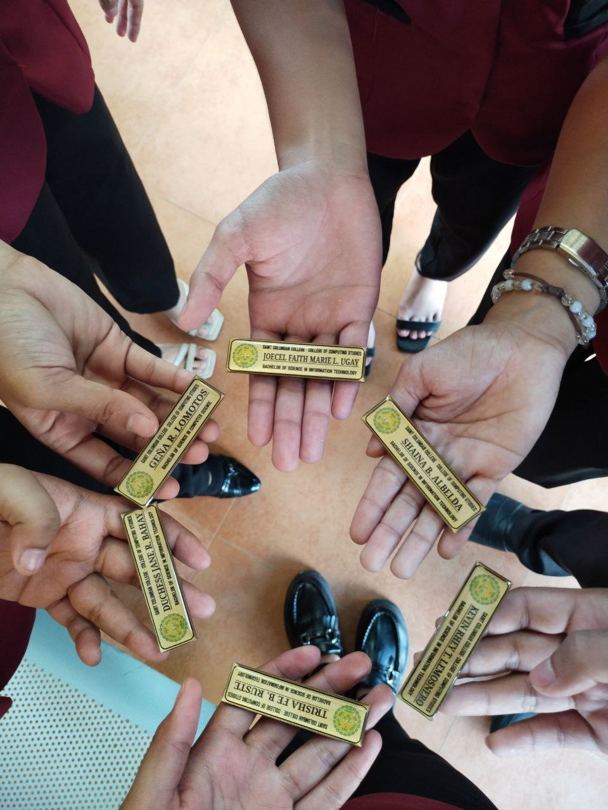

Trisha Fe Ruste December 08 · 2 min read At that time, I went to the NCIP to apply for a job, and that was my first interview
 REY MARK LAPAZ Feb 28 · 2 min read A Celebration of Service: DSWD's 74th Anniversary Continues with Giving and...